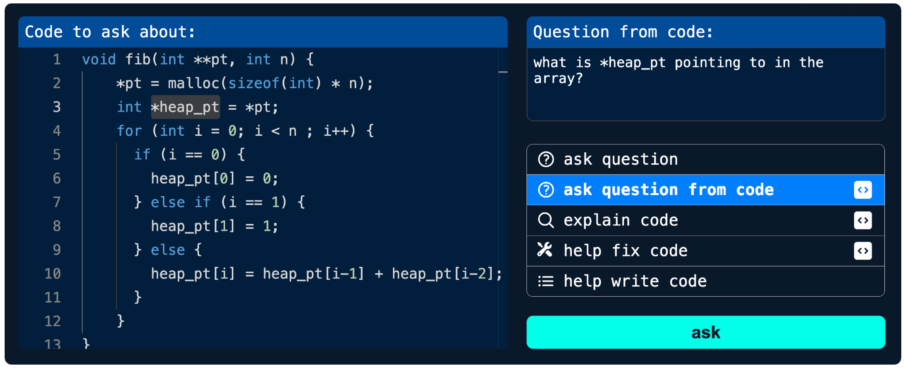
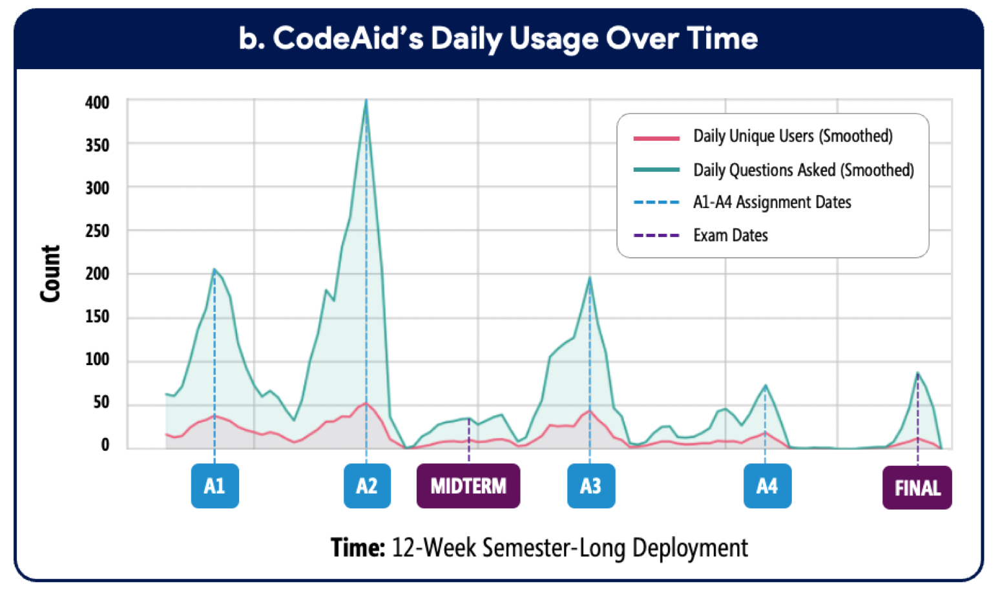
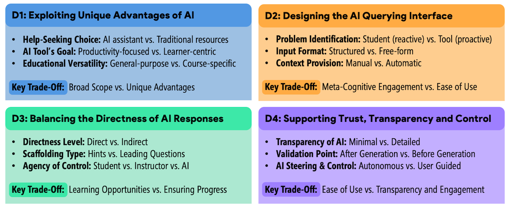

Austin Z. Henley
Associate Teaching Professor
Carnegie Mellon University
CodeAid: A classroom deployment of an LLM-based programming assistant
5/19/2024

This post was co-written with Majeed Kazemitabaar, who led this project. Majeed is a PhD student in CS at the University of Toronto who has been researching the educational impact and utility of LLMs in computing education. We summarize our recent CHI'24 paper, "CodeAid: Evaluating a Classroom Deployment of an LLM-based Programming Assistant that Balances Student and Educator Needs". See the paper for more details.
See the discussion of this post on Hacker News.
LLM-powered tools like ChatGPT can assist students that need help in programming classes by explaining code and coding concepts, generating fixed versions of incorrect code, providing examples, suggesting areas of improvement, and even writing entire code solutions.
However, the productivity-driven and direct nature of the AI's responses is concerning in educational settings. Many instructors are prohibiting their usage in introductory programming classes to avoid academic integrity issues and students' over-reliance on AI.
In this research, we explored the design and evaluation of a "pedagogical" LLM-powered coding assistant to scale up instructional support in educational settings.
We iteratively designed a programming assistant, CodeAid, that provides help to students without revealing code solutions. It was developed by Majeed as a web app that uses GPT3.5 to power an assortment of AI features. We then deployed CodeAid in a C programming course of 700 students as an optional resource, similar to office hours and Q/A forums, for their entire 12-week semester.
Overall, we collected data from the following sources:
- [✏️📋] Weekly surveys about using CodeAid vs. other non-AI resources
- [🤖⭐] CodeAid's log data
- [🎤👩🎓] Interviews with 22 students about why and how they used CodeAid
- [❓📝] Final survey asking students to compare CodeAid with ChatGPT
- [👨🏫🎤] Interviews with 8 computing educators about CodeAid, their ethical and pedagogical considerations, and comparison with other resources
During the deployment, 372 students used CodeAid and asked 8000 queries. We thematically analyzed 1750 of the queries and CodeAid's responses to understand students' usage patterns and types of queries (RQ1), and CodeAid's response Quality in terms of correctness, helpfulness, and Directness (RQ2). Furthermore, we qualitatively analyzed data collected from the interviews and surveys to understand the perspectives of students (RQ3) and educators (RQ4) about CodeAid.
CodeAid's features
CodeAid was developed with five main features that were iteratively updated during the deployment based on student feedback:
- General Question
- Question from Code
- Help Write Code
- Explain Code
- Help Fix Code
The illustration below shows these features in action:
![CodeAid allows students to ask five types of coding questions: General Question, Question From Code, Explain Code, Help Fix Code, and Help Write Code. In response, CodeAid uses LLMs to generate pedagogical answers that do not contain direct code solutions. When asked general questions or to generate code, it provides a natural language response with an interactive pseudo-code that allows students to hover over each line and understand what each line does. Responses also include relevant function documentations retrieved from a database to ensure factual accuracy and approved by course educator. When asked to help fix provided incorrect code, CodeAid does not display the fixed code. Instead, it highlights incorrect parts of the students' code with suggested fixes.](images/codeaidfeatures.jpg)
Below are some of the unique properties of CodeAid:
- Interactive Pseudo-Code: Instead of generating code, CodeAid generated an interactive pseudo-code. The pseudo-code allowed students to hover over each line to see a detailed explanation about that line.
- Relevant Function Documentations: Not everything needs to be AI-generated. CodeAid uses Retrieval Augmented Generation (RAG) to display official and instructor-verified documentations of functions relevant to students' queries. These were designed to save time, as well as to allow students to see code examples to learn about using those functions.
- Suggested Follow-Up Questions: CodeAid also generates several suggested follow-up questions for students to ask after each response.
- Annotating Incorrect Code: When using the Help Fix Code, CodeAid does not display the fixed code. Instead, it highlights incorrect parts of the students' code with suggested fixes.
- Interactive Explain Code: Instead of just displaying a high-level explanation of the entire code in a paragraph, CodeAid renders an interactive component in which students can hover over each line to understand the purpose and implementation of each line of the provided code.
- Stream Rendering of Interactive Components: CodeAid renders interactive components as the response is being streamed from the LLM enabling a more interactive experience with less delay.
Results
From our 12-week deployment, surveys, and interviews, we aim to answer our four research questions.
RQ1: Students' Usage Patterns and Type of Queries
First, let's look into the high-level statistics of students' usage of CodeAid:
- From the 300 students who consented to use their data, 160 students used CodeAid less than 10 times, whereas 62 students used it more than 30 times.
- On average, women used CodeAid significantly more frequently than men (33.8 queries vs. 18.4 queries) while representing only 30% of the entire class.

The thematic analysis revealed four types of queries from CodeAid:
- Asking Programming Questions (36%)
- Code and conceptual clarification queries (70%) about the programming language, its syntax, its memory management, and operations.
- Function-specific queries (15%) about the behavior, arguments, and return types of specific functions.
- Code execution probe queries (15%) in which students used CodeAid similar to a compiler to verify execution or evaluate the output of their code on particular inputs.
- Debugging Code (32%)
- Buggy code resolution queries (68%) that focused on fixing their incorrect code based on a provided behavior.
- Problem source identification queries (23%) in which students asked CodeAid to identify the source of the errors in their code.
- Error message interpretation queries (9%) to better explain the error that they are receiving.
- Writing Code (24%)
- High-level coding guidance queries (56%) in which students asked “how- to” questions about a specific coding task.
- Direct code solution queries (44%) where students asked CodeAid to generate the direct solution (by copying the task description of their assignment).
- Explaining Code (6%): like explaining the starter code provided in their assignments.
RQ2: CodeAid's Response Quality
The thematic analysis showed that about 80% of the responses were technically correct and The General Question, Explain Code, and Help Write Code features all responded correctly in 90% of times, while the Help Fix Code and Question from Code were correct in 60% of times.
In terms of not revealing direct solutions, CodeAid almost never revealed direct code. Instead, it generated:
- Natural language responses (43%)
- High-level response with pseudo-code of generic example code (16%)
- Pseudo-code of a specifically requested task (6%)
- Suggested fixes for minor syntax errors (16%)
- Suggested fixes for semantic issues (8%)
RQ3: Students' Perspectives and Concerns
Based on the student interviews and surveys:
- Students appreciated CodeAid's 24/7 availability and being “a private space to ask questions without being judged”.
- Students also liked CodeAid's contextual assistance which provided a faster way to access relevant knowledge, allowed students to phrase questions however they wanted, and produced responses that were relevant to their class.
- In terms of the directness of responses: some students indicated that they wanted CodeAid to produce less direct responses, like hints. Interestingly, some students regulated themselves to not use features that produced more direct responses.
- In terms of trust some students trusted CodeAid while others found that “it can lie to you and still sound confident.” Some students trusted CodeAid just because it was part of the course and the instructor endorsed it.
- When asked students about reasons for not using CodeAid, they mentioned a lack of need, preference to use existing tools, wanting to solve problems by themselves, or a lack of trust over AI.
- Comparing CodeAid with ChatGPT: even though using ChatGPT was prohibited, students reported using it slightly more than CodeAid. They preferred its easier interface, and larger context window to ask about longer code snippets. However, some students did not like ChatGPT since it did a lot of the work for them.
RQ4: Educators' Perspectives and Concerns
- Overall, most educators liked the integration of pseudo-code with line-by-line explanations as it provides structure and reduces cognitive load and is better than finding exact code solutions that are available on the internet. However, some educators were concerned that when the algorithm is what students need to learn, revealing its pseudo-code will be harmful to their learning.
- Most educators wanted to keep students away from ChatGPT. They would rather encourage students to use CodeAid instead, and even suggested integrating code editors with code execution right inside CodeAid.
- Educators wanted the ability to customize CodeAid with course topics, or when to activate/deactivate displaying pseudo-code.
- Lastly, most educators wanted a monitoring dashboard to see a summary of asked questions and generated responses as well as to reflect on their own instructor. However, other educators mentioned that students should not feel like they are being watched.
Design considerations for future educational AI assistants
We synthesized our findings into four major design considerations for future educational AI assistants, positioned within four main stages of a student's help-seeking process.

- Exploiting AI's Unique Benefits: for deciding between AI vs non-AI assistance (like debuggers and documentations).
- Designing the AI Querying Interface: once the user decides using AI assistance, how should students formulate questions and provide context? Particularly in terms of problem identification, query formulation, and context provision.
- Balancing the Directness of AI Responses: once the user asks a question, how direct should the AI respond?
- Supporting Trust, Transparency, and Control: upon receiving a response, how can students evaluate it and if necessary steer the AI towards a better response?
There is a ways to go before we understand how to best use AI in the classrooms to enhance both instructors and students. Maybe one day it will provide just the right information at just the right time to students to keep them optimally engaged and learning while identifying opportunities for the instructor to intervene.
Special thanks to the other co-authors of this work: Runlong Ye, Xiaoning Wang, Paul Denny, Michelle Craig, and Tovi Grossman.
CodeAid is open source. The full details of the design and evaluation are in our paper, CodeAid: Evaluating a Classroom Deployment of an LLM-based Programming Assistant that Balances Student and Educator Needs. You might also be interested in: